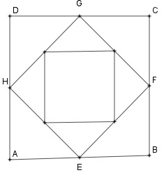

Aufgabe 121 a) Das Quadrat ABCD hat eine Seitenlänge von 10 cm. Verbindet man die Seitenmitten miteinander, entsteht das Quadrat EFGH. Wie groß ist der Flächeninhalt der Quadrate insgesamt für die ersten 10 Quadrate? Wie groß ist der Umfang der Quadrate insgesamt für die ersten 10?

b) In einem Druckluftbehälter mit einem Volumen von 1 dm3 herrscht ein Druck von 1 bar. Der Druck soll mit einer Luftpumpe, die 400 cm3 fasst, auf 10 mbar abgesenkt werden. Wieviel Kolbenbewegungen der Pumpe sind nötig? a) A1 = 10 * 10 = 100 cm2 Im rechtwinkligen Dreieck AEH gilt: Satz von Pythagoras: EH2 = AE2 + AH2 AE = AH = 10/2 = 5 cm EH2 = 52 + 52 = 50 cm2 = A2 q = 0,5 1 - 0,510 s10 = 100 * ----------- = * (100 + 0,195) 1 - 0,5 s10 = 199,8 cm2 U1 = 4 * 10 = 40 cm EH = 40 U2 = 4 * EH = ---- cm √2 1 q = ---- √2 1 1 - (----)10 √2 s10 = 40 * -------------- = 132,3 cm 1 1 - ---- √2 b) 1 dm3 = 1 000 cm3 Druck = p * V V1 = 1 000 cm3 V2 = 1 000 cm3 + 400 cm3 = 1 400 cm3 V1 1 000 q = ---- = -------- = 0,714 V2 1 400 1. Kolbenhub p1 = 1 bar = 1 000 mbar 10 = 1 000 * 0,714n |:1000 0,01 = 0,714n Logarithmieren: lg 0,01 = lg 0,714n lg 0,01 = n * lg 0,714 |:lg 0,714 n = 13,67 --> n = 14